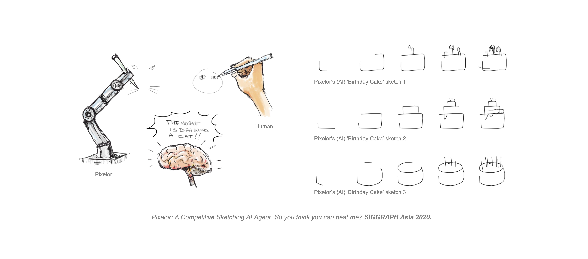
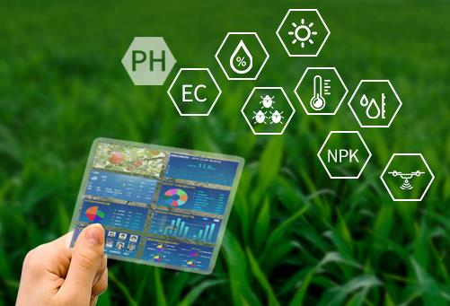
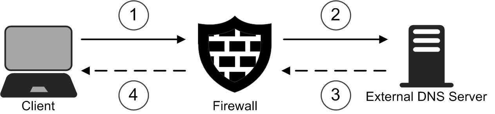
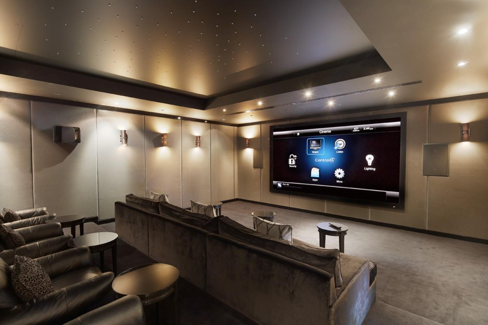

<!DOCTYPE html>
<html xmlns="http://www.w3.org/1999/xhtml" xml:lang="en">

<head>

  <title>Suhang Yao's Homepage</title>

  <meta charset="UTF-8">
  <meta name="viewport" content="width=device-width, initial-scale=1">
  <meta http-equiv="Content-Type" content="text/html; charset=UTF-8">
  <meta name="description" content="Suhang Yao is currently an undergraduate at Beijing University of Posts and Telecommunications">
  <meta name="keywords" content="Suhang Yao, 姚苏航, yaosuhang, Suhang, Yao, Machine Learning, BUPT, Computer">
  <meta name="author" content="Suhang Yao">

  <link rel="stylesheet" href="w3.css">

  <style>
  .w3-sidebar a {font-family: "Roboto", sans-serif}
  body,h1,h2,h3,h4,h5,h6,.w3-wide {font-family: "Montserrat", sans-serif;}
  </style>

  <link rel="icon" type="image/png" href="images/icons.png">
  <!--
  <script src="jquery.min.js"></script>
  <script>
  $(document).ready(function(){
    // Add smooth scrolling to all links
    $("a").on('click', function(event) {
      // Make sure this.hash has a value before overriding default behavior
      if (this.hash !== "") {
        // Prevent default anchor click behavior
        event.preventDefault();
        // Store hash
        var hash = this.hash;
        // Using jQuery's animate() method to add smooth page scroll
        // The optional number (800) specifies the number of milliseconds it takes to scroll to the specified area
        $('html, body').animate({
          scrollTop: $(hash).offset().top
        }, 800, function(){
          // Add hash (#) to URL when done scrolling (default click behavior)
          window.location.hash = hash;
        });
      } // End if
    });
  });
  </script>
  //-->

</head>


<body class="w3-content" style="max-width:1000px">

<!-- Sidebar/menu -->
<nav class="w3-sidebar w3-bar-block w3-black w3-collapse w3-top w3-right" style="z-index:3;width:150px" id="mySidebar">
  <div class="w3-container w3-display-container w3-padding-16">
    <h3><b>SUHANG</b></h3>
  </div>
  <div class="w3-padding-64 w3-text-light-grey w3-large" style="font-weight:bold">
    <a href="#home" class="w3-bar-item w3-button">Home</a>
    <a href="#interests" class="w3-bar-item w3-button">Interests</a>
    <a href="#projects" class="w3-bar-item w3-button">Projects and Research</a>
    <a href="#talks" class="w3-bar-item w3-button">Professional Experience</a>
    <a href="#publication" class="w3-bar-item w3-button">Publication</a>
    <a href="#community" class="w3-bar-item w3-button">Community Engagement</a>
    <a href="#addtional" class="w3-bar-item w3-button">Additional Information</a>
  </div>
</nav>

<!-- Top menu on small screens -->
<header class="w3-bar w3-top w3-hide-large w3-black w3-xlarge">
  <div class="w3-bar-item w3-padding-24">SUHANG</div>
  <a href="javascript:void(0)" class="w3-bar-item w3-button w3-padding-24 w3-right"  style="font-stretch: extra-expanded;" onclick="w3_open()"><b>≡</b></a>
  </div>
</header>

<!-- Overlay effect when opening sidebar on small screens -->
<div class="w3-overlay w3-hide-large" onclick="w3_close()" style="cursor:pointer" title="close side menu" id="myOverlay"></div>

<!-- !PAGE CONTENT! -->
<div class="w3-main" style="margin-left:150px">

  <!-- Push down content on small screens -->
  <div class="w3-hide-large" style="margin-top:83px"></div>

<!-- The Home Section -->
    <div class="w3-container w3-center w3-padding-32" id="home">
      
      <h1>Suhang Yao</h1>
        <p class="w3-justify" style="width:100%;border:0px;border-spacing:0px;border-collapse:separate;margin-right:auto;margin-left:auto;max-width:600px">
          I am Suhang Yao, an undergraduate from <a href="https://www.bupt.edu.cn/">Beijing University of Posts and Telecommunications</a>, majoring in Internet of Things Engineering. Besides this, I'm a junior researcher at <a href="http://sketchx.eecs.qmul.ac.uk/">SktechX Lab</a>, where I work on deep learning and computer vision, etc. 	
        </p>
        <p class="w3-center">
          <a href="mailto:ricardo@bupt.edu.cn"> Email:ricardo@bupt.edu.cn</a> &nbsp&nbsp
        </p>
        </tbody></table>
    </div>

<!-- The Interests Section -->
  <div class="w3-container w3-padding-32" id="interests">
    <h2>Interests</h2>
        <p class="w3-justify">
	<b>My research interests include:</b>
        </p>  
        <p class="w3-justify">
	&emsp;&emsp;&emsp; ◼ Computer Vision
        </p>
        <p class="w3-justify">
	&emsp;&emsp;&emsp; ◼ Data Science and Machine Learning
        </p>
        <p class="w3-justify">
	&emsp;&emsp;&emsp; ◼ Big Data Analytics
        </p>
	<p class="w3-justify">
	&emsp;&emsp;&emsp; ◼ Internet of Things
        </p> 
  </div>

<!-- The Projects Section -->
  <div class="w3-container w3-padding-32" id="projects">
    <h2>Projects and Research</h2>
	<h4><li>Unifying Sketch, Text, and Photo(ongoing)	 &nbsp;&nbsp;&nbsp;2022.10 – 2023.6(expected)</li></h4>
         
	<h5>Main tasks:</h5>
       <p class="w3-justify">
       ◼ Define a common latent space that can embed sketch, photo, and text. 
       ◼ Formulate an effective learning paradigm that can use knowledge learned from one dataset (e.g., photo and text paired information) for novel tasks without need of explicit supervision.      
        </p> 
	<h5>Expected outcome:</h5>
       <p class="w3-justify">
       ◼ A trained deep network for three-way embedding learning.
       </p> 
       <p class="w3-justify">
       ◼ A novel deep network for to relate the three different domains.
       </p> 
       <p class="w3-justify">
       ◼ Performance that is comparable or exceeds state of the art alternatives.
       </p> 
	  
        <h4><li>Comparative Study of Three Regression Methods in Rental Rate Predictions	 &nbsp;&nbsp;&nbsp;2022.6 – 2022.7</li></h4>
         
        <p class="w3-justify">
        <a style="color: #447ec9" href="https://docs.foxitcloud.cn/cloudShare/?code=QhXamNLI">Project Page</a>
        </p>
        <p class="w3-justify">
       ◼ Processed rental dataset of Airbnb, cleaned the dataset using K-means clustering; delivered a visualized analysis via Tableau; compared the goodness-of-fit and performance of XGBoost, KNN, and Decision Tree.
        </p> 

        <h4><li>Design of Livestock Farm Management System Based on Wireless Sensor Network	 &nbsp;&nbsp;&nbsp;2022.6 – 2022.7</li></h4>
         
        <p class="w3-justify">
        <a style="color: #447ec9" href="https://docs.foxitcloud.cn/cloudShare/?code=zFdyorQt">Project Page</a> 
        </p>
        <p class="w3-justify">
	◼ Singlehandedly effectuated the entire schedule, e.g., market research, hardware and software design, and related application support technology design, of the project. This system encompasses a main control module, data acquisition module, WIFI communication module, alarm control software, carbon dioxide concentration sensor software, temperature and humidity sensor software, and many others.
        </p> 
	  
	<h4><li>DNS Relay:High performance network server programming		 &nbsp;&nbsp;&nbsp;2022.6 – 2022.7</li></h4>
            
        <p class="w3-justify">
	◼ Analyze the intercepted DNS request message according to the dns protocol, and assemble UDP response message according to the protocol.
        </p>  
	<p class="w3-justify">
	◼ Use thread pool to realize concurrent network server.
        </p> 
	  
        <h4><li>Using DBSCAN and K-means to Cluster LNG Stations	 &nbsp;&nbsp;&nbsp;2022.5 – 2022.6</li></h4>
        
        <p class="w3-justify">
        <a style="color: #447ec9" href="https://docs.foxitcloud.cn/cloudShare/?code=yT3S52RB">Project Page</a>
        </p>
        <p class="w3-justify">
	◼ Preprocessed the raw data of LNG stations info using Pandas and NumPy.
        </p>  
	<p class="w3-justify">
	◼ Performed clustering via DBSCAN employing scikit-learn.
        </p>  
	<p class="w3-justify">
	◼ Obtained the cluster centers with K-means and classified the centers; leveraged Tableau for visualized analysis.
        </p>  
	  
	<h4><li>NB-IoT: An Access Control System	 &nbsp;&nbsp;&nbsp;2022.5 – 2022.6</li></h4>
            
        <p class="w3-justify">
	◼ Oversaw the implementation of the project after delivery; investigated the dynamic traffic on the spot to discern where enhancements are necessary and put forward amendment proposals.
        </p>  
	<p class="w3-justify">
	◼ Selected cost-efficient hardware gadgets, designed the software implementation workflow, constructed the database using an ER model in MySQL, and created the prototype of UI using HTML+CSS+Python.
        </p>  	
	  
	<h4><li>Power Grid Troubleshooting with SVM	 &nbsp;&nbsp;&nbsp;2022.1 – 2022.4</li></h4>
           
        <p class="w3-justify">
	◼ Probed into readily accessible algorithms applicable to power grid fault detection and selected Support Vector Machine as the optimal.
	</p>  
	<p class="w3-justify">
	◼ Preprocessed and imported data as regards power grid faults capable of model training, visualized entity sets with Navicat Premium 12, and pinpointed the types and timing of faults.
        </p>    
	<p class="w3-justify">
	◼ As requested, scrutinized the project demand and interconnectedness between datasheets, and wrote SQL statements to split the DevCode of the fault datasheet, and connected the fault datasheet with thetraveling wave datasheet.
        </p> 
	<p class="w3-justify">
	◼ Optimized the string-matching algorithms and adjusted the hyper-parameters of machine learning models with random searching, boosting the efficiency of power fault detection and prescription.
        </p> 
	  
	<h4><li>Use XGBoost to Predict the Rental Based on Airbnb Open Data	 &nbsp;&nbsp;&nbsp;2021.9 – 2021.11</li></h4>
              
        <p class="w3-justify">
	◼ To be published: CONF-SPML 2022.
        </p>  
	<p class="w3-justify">
	◼ Conducted Exploratory Data Analysis on Airbnb open dataset and examined drivers and trends of rental rates in New York by virtue of XGBoost.
        </p>  
	  
	<h4><li>A Management-oriented Smart Home System		&nbsp;&nbsp;&nbsp;2021.7 – 2021.11</li></h4>
          
        <p class="w3-justify">
	◼ Applied C/S architecture, leveraged MySQL to construct the backend database, and employed CSS+JAVA+JSP to realize the GUI.
        </p>  
	<p class="w3-justify">
	◼ Wrote JAVA files with IntelliJ IDEA, realizing such functions as CRUD operations and monitoring data visualizations.
        </p>  
  </div>

  <!-- The Professional Experience Section -->
  <div class="w3-container w3-light-grey w3-padding-32" id="talks">
    <h2>Professional Experience</h2>
    	<h4><li><a href="https://www.inovance.com">Shenzhen Inovance Technology</a>  &nbsp;&nbsp;&nbsp;2022.6 – 2022.9   &nbsp;&nbsp;&nbsp;AI Engineer</li></h4>    
        <p class="w3-justify">
	◼ Exhaustively researched speech recognition algorithms on board in line with the Intelligent Elevator project's expected elevator traffic, budget, etc.; proposed feasible, cost-optimal algorithm solutions for the project's speech recognition system.
        </p>  
	<p class="w3-justify">
	◼ Converted the grayscale and added in edge enhancement to the given image set, denoised the images capable of image extraction, and extracted the features using HOG (Histogram of Oriented Gradients).
        </p> 
	<p class="w3-justify">
	◼ Tailored a wide array of black- or white-box tests, involving partition, scenario-based, regression, and basis path testing, imperative for the iterations of the elevator’s facial recognition system; produced test matrices and bulletins in a timely and informative capacity.
        </p> 
	<br>
	<h4><li><a href="http://e-ky.cn/#/">Californium Electronics</a>  &nbsp;&nbsp;&nbsp;2022.1 – 2022.2   &nbsp;&nbsp;&nbsp;AI Engineer</li></h4>  
        <p class="w3-justify">
	◼ Mined students’ comments from near-100 schools of our AI-powered K12 Smart Campus Platform: preprocessed textual data surpassing 300,000 pieces by virtue of word segmentation and frequency analysis; preprocessed time field data, transformed the unformatted data into unified, machineunderstandable formats; performed a sentiment analysis employing PaddleNLP to analyze students's satisfaction of this platform.
        </p>  
	<p class="w3-justify">
	◼ Visualized the comment data harnessing WordCloud; leveraged LDA (Latent Dirichlet Allocation) for topic discovery, carried out a visualized analysis, and then output the results to inform now-next-later product iterations.
        </p> 
	<br>
    	<h4><li><a href="http://www.swic.ac.cn/">Southwest Information</a>  &nbsp;&nbsp;&nbsp;2021.7 – 2021.8   &nbsp;&nbsp;&nbsp;Software Engineer</li></h4>
        <p class="w3-justify">
	◼ Probed into such tools as Nacos, Redis, and Spring, executed an introductory walk-through of microservice architecture, and critically examined closed cases as part of my vocational training
        </p>  
	<p class="w3-justify">
	◼ Oversaw the code quality of the Digital Archive project and delivered code annotation with Spring Boot where necessary.
        </p> 
	<p class="w3-justify">
	◼ Coded users' demographic characteristics such as gender and age; grouped users through feature engineering for further processing and categorized users’ medication-taking behaviors and frequencies, boosting the accuracy and prioritization of medication data screening; visualized the attributes of user -data via Seaborn, indicating the seasonal distribution of medication prices.
        </p> 	  
  </div>

  <!-- The Publication Section -->
  <div class="w3-container w3-padding-32" id="publication">
     <h2>Publication</h2>
        <p class="w3-justify">
         I'm interested in devleoping efficient models for machine learning and data science. Although I haven't produce a lot publications, I will continue to hone myself and immerse in research.
        </p> 
    <p><li> <a href="http://ceur-ws.org/Vol-3150/paper5.pdf"><b>Use XGBoost to Predict the Rental Based on Airbnb Open Data</b></a>, Suhang Yao  &nbsp;&nbsp;&nbsp;CONF-SPML 2022</p>
  </div>  

<!-- The Community Section -->
  <div class="w3-container w3-light-grey w3-padding-32" id="community">
    <h2>Community Engagement</h2>
    	<h4><li>Siyuan Volunteerism — AI and Data for Good &nbsp;&nbsp;&nbsp;Volunteer &nbsp;&nbsp;&nbsp;2022.3 – 2022.4</li></h4>
        <p class="w3-justify">
	◼ Wrote contextual scripts and dialogues that surpass 1,000 pieces for conversational AI, analyzed AI outputs in response to diverse users’ queries, and subsequently refine AI replies in social service settings.
        </p>  
	<br>  
	<h4><li>Office of Academic Events, BUPT Student Government &nbsp;&nbsp;Head &nbsp;&nbsp;2019.9 – 2020.9</li></h4>
        <p class="w3-justify">
	◼ Officiated and presided over academic events like debates, speech competitions, and lectures, reaching no less than 700 students, reviewed new event proposals and upgraded existing events, and ensured the smooth running of all the upcoming and on-going events.
	</p>  
  </div>

<!-- The Addtional Section -->
  <div class="w3-container w3-light-grey w3-padding-32" id="addtional">
    <h2>Additional Information</h2>
        <p class="w3-justify">
	<b>Technical Skills:</b> Proficient in VMware, MATLAB, Python, C, JAVA, Wireshark, MySQL, Spring Boot, etc
	</p>  
	
	<p class="w3-justify">
	<b>Languages:</b> English (IELTS: 7), Putonghua (Native), etc.
	</p>  
  </div>


  <!-- End page content -->
</div>

<script>
// Accordion 
function myAccFunc() {
  var x = document.getElementById("demoAcc");
  if (x.className.indexOf("w3-show") == -1) {
    x.className += " w3-show";
  } else {
    x.className = x.className.replace(" w3-show", "");
  }
}

// Click on the "Jeans" link on page load to open the accordion for demo purposes
document.getElementById("myBtn").click();


// Open and close sidebar
function w3_open() {
  document.getElementById("mySidebar").style.display = "block";
  document.getElementById("myOverlay").style.display = "block";
}
 
function w3_close() {
  document.getElementById("mySidebar").style.display = "none";
  document.getElementById("myOverlay").style.display = "none";
}
</script>

</body>
</html>
